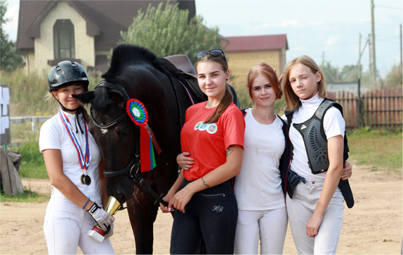
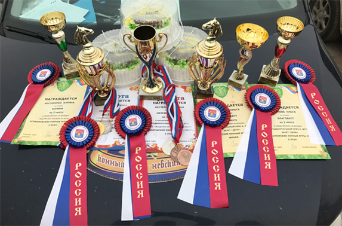
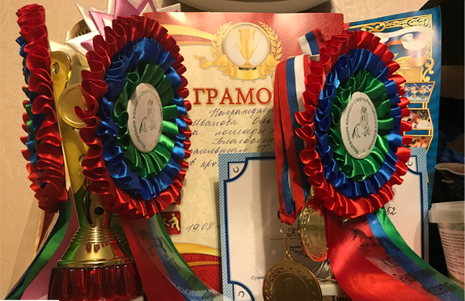
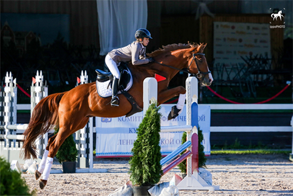

-

Спортсмены КСК “Онежская слобода” совершенствуются
в двух основных олимпийских дисциплинах конного
спорта - выездке и конкуре. На базе клуба проводятся
соревнования.
-

Всадники клуба успешно показали себя
в региональных и всероссийских соревнованиях
в Санкт-Петербурге и Москве.
-

По результатам 2019 года при поддержке Федерации
Конного спорта республики Карелия будет
сформирована и утверждена Сборная команда
республики Карелия по конному спорту.
-

Спортсменка клуба Яна-Эрика Ральман в сезоне 2019
стала неоднократным призером и победителем
региональных соревнований по конкуру
с высотой препятствий до 140 см и
выполнила 1й взрослый разряд.